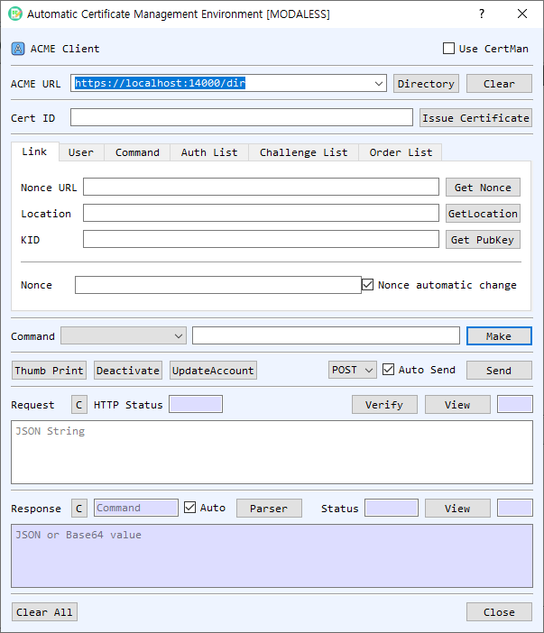

ACME Client Dialog Guide
The ACME Client communicates with an ACME directory to manage an account, create certificate orders, complete authorizations, and retrieve issued certificates. It exposes individual ACME commands and a guided Issue Certificate workflow.

Figure 1. ACME Client dialog. Retrieve the directory first to populate endpoint commands, then build and send requests while parsing server responses.
Screen Areas
- Use CertMan — Select whether the ACME account key comes from CertMan or KeyPairMan. The client supports RSA, ECDSA, and EdDSA account keys.
- ACME URL / Directory / Clear — Enter the ACME directory URL and select Directory to retrieve its endpoint map. The command selector is populated from the directory response. Clear clears saved URL entries.
- Cert ID / Issue Certificate — Cert ID identifies a certificate for applicable commands. Issue Certificate runs the guided account, order, authorization, challenge, finalize, and certificate retrieval sequence, prompting before each step.
- Link tab — Contains Nonce URL, Location, and KID. Get Nonce fetches a Replay-Nonce; GetLocation retrieves the selected resource; Get PubKey loads the account key's public-key identifier. Nonce automatic change allows the nonce to be refreshed during command processing.
- User tab — Enter the account Email and add DNS identifiers to the DNS list. DNS Check opens DNS checking for the listed names. Add and Clear manage the identifier list. ChallTest opens the challenge test utility.
- Command tab — Select an ACME command, enter or confirm its endpoint URL, and choose Make to create the signed JSON request. The hash selection is used with the account key.
- Auth List / Challenge List / Order List — Display parsed authorizations, challenges, and orders. Their context menus provide available row operations, including removal or rebuilding where supported.
- Method / Auto Send / Send — Choose POST or GET. Auto Send transmits a generated request automatically; otherwise use Send manually.
- Thumb Print / Deactivate / UpdateAccount — Run account/key actions for the selected ACME context.
- Request — Displays the JSON/JWS request. Verify checks its JWS signature; View opens the JSON structure; C clears it. HTTP Status shows the response status associated with the request exchange.
- Response / Parser / Auto / Status — Displays the server's JSON or Base64 response. Parser interprets the response and updates command, authorization, challenge, or order lists. Auto parses responses automatically. View inspects the response structure; C clears it.
- Clear All / Close — Clear the current ACME state or close the dialog.
Start an ACME Session
- Enter the ACME directory URL and select Directory. The directory endpoints and nonce URL are loaded into the command controls.
- Select an account key source with Use CertMan. The first signed request prompts for the account key pair or certificate/key from the selected manager.
- Select Get Nonce or leave Nonce automatic change enabled to manage nonces during requests.
- Enter the account email in the User tab and add the DNS identifier to the list.
- Choose a command and review the endpoint URL. Select Make to build the signed request. With Auto Send enabled, it is sent immediately.
- Review the HTTP status and response. Keep Auto enabled or select Parser to extract endpoint links and populate the command, authorization, challenge, and order lists.
Issue a Certificate
- Retrieve the directory and nonce, enter the account email, and add one DNS name. The guided workflow currently supports one DNS identifier at a time.
- Select Issue Certificate and confirm each prompted command. The workflow creates an account and order, processes authorization and challenge steps, finalizes the order, fetches the order/certificate, and displays the returned certificate chain.
- Complete the DNS or HTTP challenge with the validation data required by the ACME server. Use DNS Check or ChallTest where appropriate; this dialog does not make control of the domain automatic.
- When prompted, save the issued certificate and private key to CertMan.
Command and Response Handling
- Directory fetches the server's directory object and fills the endpoint list.
- Make constructs the request for the selected command; Send transmits it using the selected HTTP method.
- Parser reads the response status and detail, then adds links for related operations such as finalize, authorization, orders, and certificate retrieval.
- GetLocation retrieves a resource URL; UpdateAccount and Deactivate run the corresponding account commands.
- Right-click rows in the command, authorization, challenge, or order lists for supported row actions.
Notes
- ACME requires a reachable directory endpoint, valid account credentials, fresh replay nonces, and successful domain authorization.
- Keep the ACME account private key confidential. Changing account keys or deactivating an account affects the server-side ACME account.
- Review the server response and HTTP status after every operation. A successful request submission does not mean domain authorization or certificate issuance succeeded.
- Challenge validation may require DNS or web-server configuration outside BerEditor. Complete that step before finalizing the order.